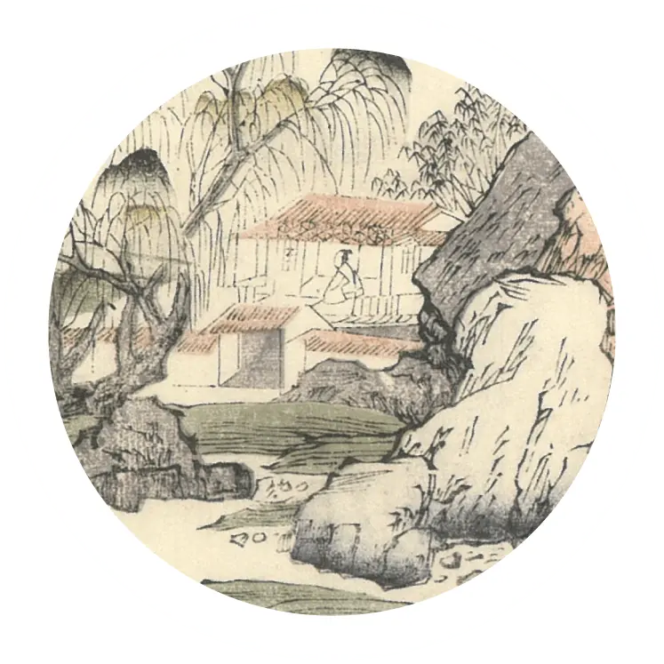

中國文哲研究所
Institute of Chinese Literature
and Philosophy, Academia Sinica

古籍與現代世界
Rare Books and the Modern World
古籍是以前人讀的書，
我們現在所讀的書，未來有一天也會變成「古籍」。
當人們的生命隨著時間消失了，他們讀過的書，依然會留在這個世界上，告訴後面的人：
我們這個時代閱讀的是這樣的書、我們吸收的是這樣的知識
—— 作為讀者的我們，是這樣活著的。
如今，我們透過這些留下來的古籍，接近過去的生命。
藉由仍存在於世的物質，還原他們鮮活的思想活動。
觀察書頁邊緣，我們理解古人是怎麼與書互動；
閱讀古籍流浪與保存，知道它們是在誰的保護下，才能穿越悠悠時光來到我們面前；
這些古籍身上，留下了他們與各個時代讀者互動的痕跡，
儘管他們讀的書形式不同、讀書的方式不同，
但他們跟我們一樣，都是讀書的人。
古籍是以前人讀的書，
我們現在所讀的書，未來有一天也會變成「古籍」。
當人們的生命隨著時間消失了，他們讀過的書，依然會留在這個世界上，告訴後面的人：
我們這個時代閱讀的是這樣的書、我們吸收的是這樣的知識。
——作為讀者的我們，是這樣活著的。
如今，我們透過這些留下來的古籍，接近過去的生命。
藉由仍存在於世的物質，還原他們鮮活的思想活動。
觀察書頁邊緣，我們理解古人是怎麼與書互動；
閱讀古籍流浪與保存，知道它們是在誰的保護下，才能穿越悠悠時光來到我們面前；
這些古籍身上，留下了他們與各個時代讀者互動的痕跡，
儘管他們讀的書形式不同、讀書的方式不同，但他們跟我們一樣，都是讀書的人。
古籍是以前人讀的書，
我們現在所讀的書，
未來有一天也會變成「古籍」。
當人們的生命隨著時間消失了，他們讀過的書，依然會留在這個世界上，告訴後面的人：
我們這個時代閱讀的是這樣的書、
我們吸收的是這樣的知識。
——作為讀者的我們，是這樣活著的。
如今，我們透過這些留下來的古籍， 接近過去的生命。 藉由仍存在於世的物質，還原他們鮮活的思想活動。 觀察書頁邊緣，我們理解古人是怎麼與書互動； 閱讀古籍流浪與保存，知道它們是在誰的保護下， 才能穿越悠悠時光來到我們面前；
這些古籍身上，
留下了他們與各個時代讀者互動的痕跡，
儘管他們讀的書形式不同、讀書的方式不同，但他們跟我們一樣，都是讀書的人。
-
《史記鈔》九十一卷（1620），中國嘉善縣圖書館藏，《嘉興市珍貴古籍圖錄》
書頁邊緣
「書頁邊緣」就是那些出現在「正文」之外的「副文本」，包含文字、圖像和符號。從書封開始，書名、扉頁、版式、印章，插圖，批語，序跋，都是書頁邊緣。書頁邊緣過去常被認為是內容之「外」，不重要的部分，但它也是最好玩、最鮮活，最保存了那個時代趣味的部分。就讓我們帶你一起，發現書頁邊緣的樂趣吧！
-
古籍流浪記
現在大家接觸到古籍的方式，多是在圖書館的特藏區。但是現代公共圖書館在十九世紀才開始普遍設立，如今圖書館裡的那些宋版書，年紀比圖書館還要老上幾百年——這些古籍，在住進圖書館以前待在哪裡呢？
《杜詩偶評》四卷（1747），中國平湖市圖書館藏，《嘉興市珍貴古籍圖錄》 -
《良友畫報》。《中國文獻珍本叢書. 民國畫報匯編. 上海卷》，北京市：全國圖書館文獻縮微複製中心，2007年。
讀者演變記
在我們想像中，古人讀書的樣子可能只有一種，但實際上，每個時代的閱讀樣態都很不一樣。書的型態隨著時代變化而不同，讀者的閱讀方式也不同。 他們會有因此產生的習慣、困擾與批評，這也都是他們閱讀生命的一部分。
「書籍的生命與人相比更為脆弱，不禁水火，不敵蟲蟻。
書籍的命運也更為無常，從誕生到被損壞乃至毀滅，全無自己的意志，完全掌握在人的手中。
然而書籍卻在人力的護持之下，在歷史之中幻化出不同的形態，經過無數地被靜置、被翻閱，度過了數倍於人類生命長度的歲月，穿越時空將其新的面貌展現在我們面前。 人類共同的歷史與記憶也正依靠著這小小的脆弱生命，頑強地綿延於時間的長河之中，最終超越人類的生命獲得永恆。」
—— 東京大學大學院人文社會系研究科博士班 李華雨
（「書籍的一百種面貌 文學與媒介：從寫本到數位」研習營學員）
「書籍的生命與人相比更為脆弱，不禁水火，不敵蟲蟻。
書籍的命運也更為無常，從誕生到被損壞乃至毀滅，全無自己的意志，完全掌握在人的手中。
然而書籍卻在人力的護持之下，在歷史之中幻化出不同的形態，經過無數地被靜置、被翻閱，度過了數倍於人類生命長度的歲月，穿越時空將其新的面貌展現在我們面前。 人類共同的歷史與記憶也正依靠著這小小的脆弱生命，頑強地綿延於時間的長河之中，最終超越人類的生命獲得永恆。」
—— 東京大學大學院人文社會系研究科博士班 李華雨
（「書籍的一百種面貌 文學與媒介：從寫本到數位」研習營學員）
「書籍的生命與人相比更為脆弱，
不禁水火，不敵蟲蟻。
書籍的命運也更為無常，從誕生到被損壞乃至毀滅，全無自己的意志，完全掌握在人的手中。
然而書籍卻在人力的護持之下，在歷史之中幻化出不同的形態，經過無數地被靜置、被翻閱，度過了數倍於人類生命長度的歲月，穿越時空將其新的面貌展現在我們面前。 人類共同的歷史與記憶也正依靠著這小小的脆弱生命，頑強地綿延於時間的長河之中，最終超越人類的生命獲得永恆。」
—— 東京大學大學院人文社會系研究科博士班 李華雨
（「書籍的一百種面貌 文學與媒介：從寫本到數位」研習營學員）
「從寫本到數位」
研習營精華

-
什麼是寫本？抄書也可以有學問
雷之波 助研究員
-
「知識」從哪兒來？明代人喜歡讀的歷史、小說、故事書
劉瓊云 副研究員
-
從寫本到數位：書藉的過去與未來
論壇：楊玉成 研究員、劉苑如 研究員、李育霖 研究員
「書籍的一百種面貌 文學與媒介：從寫本到數位」
研習營報導
今年（2021）夏天的八月二十四日至二十七日這三天， 參與研習營的我們在線上相會， 共同討論文學載體的演變：從中古的寫本，到晚清民國的報刊，與當今的數位人文。 許多相關領域的傑出學者，在研習營分享他們的研究所得，與學員一起進行跨領域的交流。
研習營以線上方式進行，原是疫情時代下的因應，
但因此處在媒介演變現場的我們，卻對文學載體的演變歷程，有更深的感觸。
「書籍的一百種面貌 文學與媒介：從寫本到數位」
研習營報導
今年（2021）夏天的八月二十四日至二十七日這三天，參與研習營的我們在線上相會，共同討論文學載體的演變：從中古的寫本，到晚清民國的報刊，與當今的數位人文。許多相關領域的傑出學者，在研習營分享他們的研究所得，與學員一起進行跨領域的交流。研習營以線上方式進行，原是疫情時代下的因應，但因此處在媒介演變現場的我們，卻對文學載體的演變歷程，有更深的感觸。
「書籍的一百種面貌 文學與媒介：從寫本到數位」
研習營報導
今年（2021）夏天的八月二十四日至二十七日這三天，參與研習營的我們在線上相會，共同討論文學載體的演變：從中古的寫本，到晚清民國的報刊，與當今的數位人文。許多相關領域的傑出學者，在研習營分享他們的研究所得，與學員一起進行跨領域的交流。研習營以線上方式進行，原是疫情時代下的因應，但因此處在媒介演變現場的我們，卻對文學載體的演變歷程，有更深的感觸。